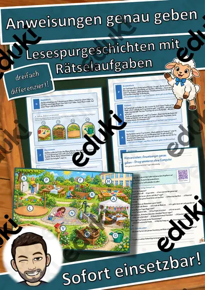
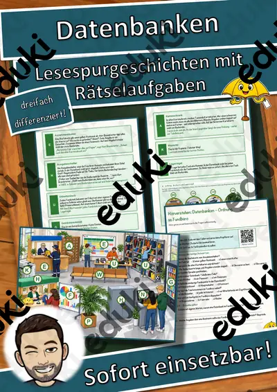
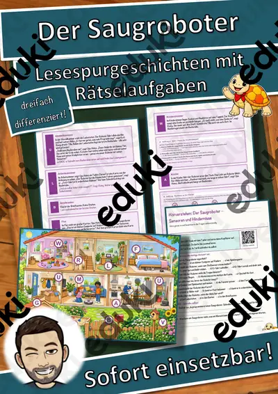
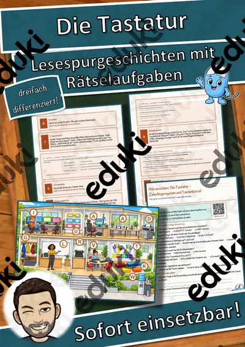
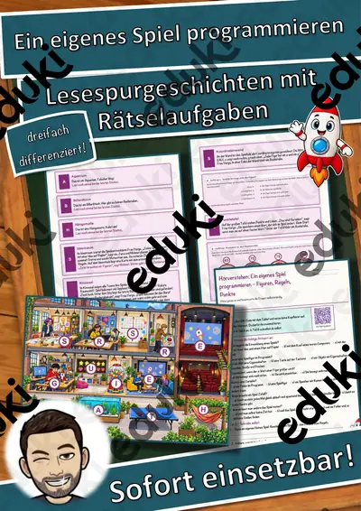
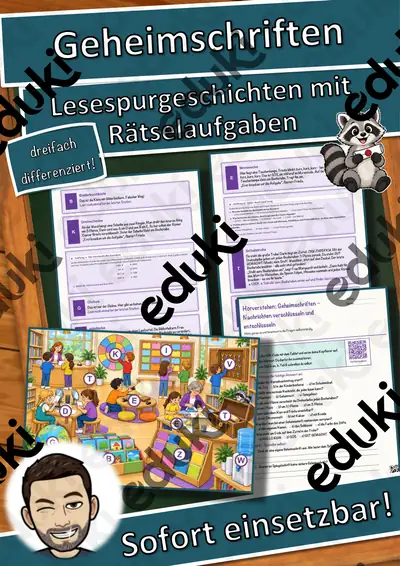
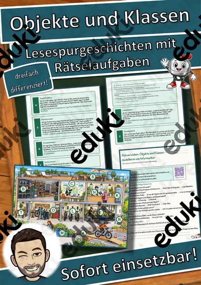
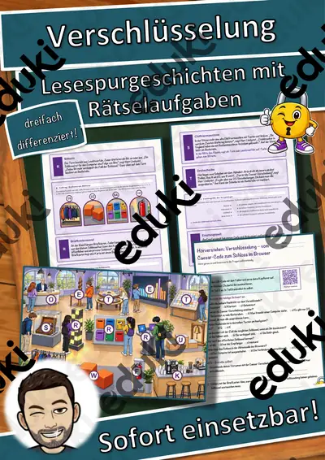
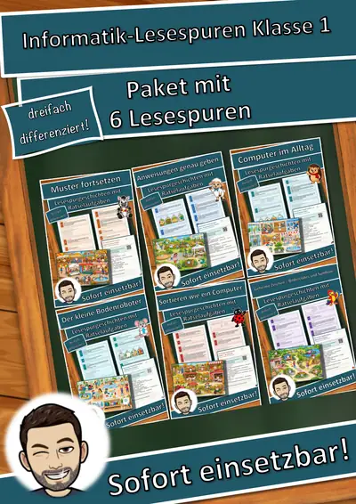
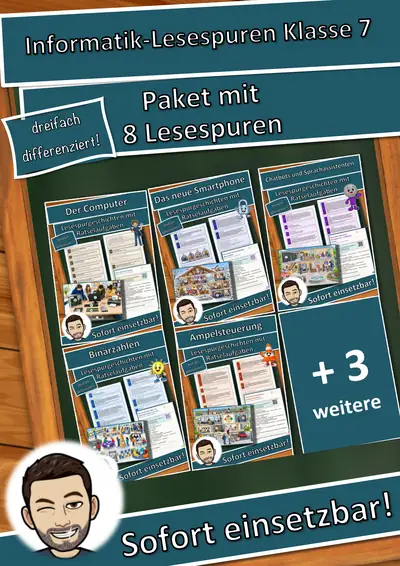

Lesespur: Algorithmen im Alltag: Schritt für Schritt zum Ziel – Lesespurgeschichte mit Rätseln (Klasse 5)

Lesespur: Ampelsteuerung: Zustände und Automaten – Lesespurgeschichte mit Rätseln (Klasse 7)

Lesespur: Anweisungen genau geben: Programmieren ohne Computer – Lesespurgeschichte mit Rätseln (Klasse 1)

Lesespur: Barcodes und QR-Codes: Informationen in Strichen und Punkten – Lesespurgeschichte mit Rätseln (Klasse 7)

Lesespur: Bedingungen und Schleifen: Wenn-dann und Wiederhole – Lesespurgeschichte mit Rätseln (Klasse 6)

Lesespur: Binärzahlen: die Sprache der Computer aus 0 und 1 – Lesespurgeschichte mit Rätseln (Klasse 7)

Lesespur: Computer im Alltag: wo überall Computer stecken – Lesespurgeschichte mit Rätseln (Klasse 1)

Lesespur: Das neue Smartphone: sicher einrichten – Lesespurgeschichte mit Rätseln (Klasse 7)

Lesespur: Dateien und Ordner: Ordnung auf dem Computer – Lesespurgeschichte mit Rätseln (Klasse 5)

Lesespur: Datenbanken: Ordnung im Fundbüro – Lesespurgeschichte mit Rätseln (Klasse 10)

Lesespur: Datendetektive: Daten sammeln, zählen, darstellen – Lesespurgeschichte mit Rätseln (Klasse 3)

Lesespur: Datenkompression: wie Dateien klein werden – Lesespurgeschichte mit Rätseln (Klasse 10)

Lesespur: Deepfakes: gefälschte Bilder und Videos erkennen – Lesespurgeschichte mit Rätseln (Klasse 10)

Lesespur: Der Computer – Lesespurgeschichte mit Rätseln (Klasse 7)

Lesespur: Der Hackathon: im Team eine digitale Idee entwickeln – Lesespurgeschichte mit Rätseln (Klasse 10)

Lesespur: Der Saugroboter: Sensoren und Hindernisse – Lesespurgeschichte mit Rätseln (Klasse 3)

Lesespur: Der Schulserver – Lesespurgeschichte mit Rätseln (Klasse 8)

Lesespur: Der kleine Bodenroboter: Befehle Schritt für Schritt – Lesespurgeschichte mit Rätseln (Klasse 1)

Lesespur: Die Tastatur: Zehnfingersystem und Tastenkürzel – Lesespurgeschichte mit Rätseln (Klasse 5)

Lesespur: Digitale Spuren: Cookies, Tracking und Profile – Lesespurgeschichte mit Rätseln (Klasse 8)

Lesespur: E-Mails und Netiquette: höflich und sicher schreiben – Lesespurgeschichte mit Rätseln (Klasse 5)

Lesespur: Ein eigenes Spiel programmieren: Figuren, Regeln, Punkte – Lesespurgeschichte mit Rätseln (Klasse 7)

Lesespur: Fehlersuche: Bugs finden und beheben – Lesespurgeschichte mit Rätseln (Klasse 6)

Lesespur: Geheime Zeichen: Bildercodes und Symbole – Lesespurgeschichte mit Rätseln (Klasse 1)

Lesespur: Geheimschriften: Nachrichten verschlüsseln und entschlüsseln – Lesespurgeschichte mit Rätseln (Klasse 3)

Lesespur: Geschichte der Informatik: Rundgang durchs Computermuseum – Lesespurgeschichte mit Rätseln (Klasse 8)

Lesespur: Kann ein Computer lernen?: KI für Kinder – Lesespurgeschichte mit Rätseln (Klasse 3)

Lesespur: Künstliche Intelligenz: wie Maschinen aus Beispielen lernen – Lesespurgeschichte mit Rätseln (Klasse 9)

Lesespur: Meine Daten: was ich im Netz für mich behalte – Lesespurgeschichte mit Rätseln (Klasse 3)

Lesespur: Messen, Steuern, Regeln: das Gewächshaus mit Mikrocontroller – Lesespurgeschichte mit Rätseln (Klasse 8)

Lesespur: Morsen und Signale: Nachrichten codieren – Lesespurgeschichte mit Rätseln (Klasse 3)

Lesespur: Muster fortsetzen: Regeln finden wie ein Computer – Lesespurgeschichte mit Rätseln (Klasse 1)

Lesespur: Navigation: den kürzesten Weg berechnen – Lesespurgeschichte mit Rätseln (Klasse 8)

Lesespur: Objekte und Klassen: modellieren wie Informatiker – Lesespurgeschichte mit Rätseln (Klasse 10)

Lesespur: Phishing und Betrug im Netz erkennen – Lesespurgeschichte mit Rätseln (Klasse 9)

Lesespur: Pixelbilder: wie der Computer Bilder speichert – Lesespurgeschichte mit Rätseln (Klasse 3)

Lesespur: Programmieren mit Blöcken: meine erste Animation – Lesespurgeschichte mit Rätseln (Klasse 5)

Lesespur: Präsentationen gestalten: Folien, die überzeugen – Lesespurgeschichte mit Rätseln (Klasse 6)

Lesespur: Prüfziffern: wie Computer Tippfehler erkennen – Lesespurgeschichte mit Rätseln (Klasse 7)

Lesespur: Roboter in der Fabrik: Automatisierung und Arbeit – Lesespurgeschichte mit Rätseln (Klasse 9)

Lesespur: Selbstfahrende Autos: Chancen und Risiken – Lesespurgeschichte mit Rätseln (Klasse 10)

Lesespur: Sichere Passwörter: mein digitaler Schlüssel – Lesespurgeschichte mit Rätseln (Klasse 3)

Lesespur: Smart Home: das vernetzte Haus – Lesespurgeschichte mit Rätseln (Klasse 8)

Lesespur: Social Media: wie der Feed ausgewählt wird – Lesespurgeschichte mit Rätseln (Klasse 8)

Lesespur: Sortieren wie ein Computer: der Reihe nach – Lesespurgeschichte mit Rätseln (Klasse 1)

Lesespur: Suchen und Sortieren: Algorithmen mit Spielkarten – Lesespurgeschichte mit Rätseln (Klasse 6)

Lesespur: Suchmaschinen: richtig suchen und finden – Lesespurgeschichte mit Rätseln (Klasse 5)

Lesespur: Tabellenkalkulation: Zellen, Formeln, Diagramme – Lesespurgeschichte mit Rätseln (Klasse 9)

Lesespur: Urheberrecht und Lizenzen: Bilder, Musik und Texte richtig nutzen – Lesespurgeschichte mit Rätseln (Klasse 6)

Lesespur: Verschlüsselung: vom Caesar-Code zum Schloss im Browser – Lesespurgeschichte mit Rätseln (Klasse 9)

Lesespur: Wie eine Nachricht durchs Internet reist: Pakete, Router, Adressen – Lesespurgeschichte mit Rätseln (Klasse 6)

Materialpaket Lesespurgeschichten Informatik Klasse 1: 6 Lesespuren mit Rätselaufgaben, dreifach differenziert

Materialpaket Lesespurgeschichten Informatik Klasse 3: 8 Lesespuren mit Rätselaufgaben, dreifach differenziert

Materialpaket Lesespurgeschichten Informatik Klasse 5: 6 Lesespuren mit Rätselaufgaben, dreifach differenziert

Materialpaket Lesespurgeschichten Informatik Klasse 6: 6 Lesespuren mit Rätselaufgaben, dreifach differenziert

Materialpaket Lesespurgeschichten Informatik Klasse 7: 8 Lesespuren mit Rätselaufgaben, dreifach differenziert